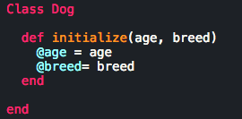
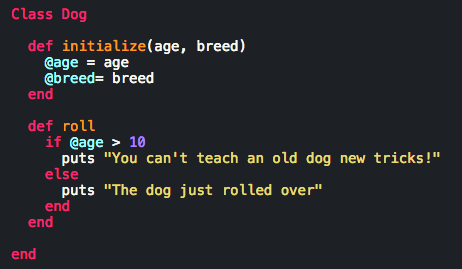
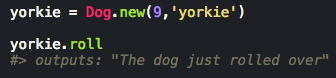

Classes are like objects, except we get a chance to define things about them. Their like super objects consistent of traits made out of methods and other objects. We're creating something to play with in essence. Think about a dog. What's breed and age is it... did you think about that stuff yet? Great! Because right there in your head, you created Class Dog and then initialized 2 of it's inherent traits! Let's see what that would look like:

"Woah, woah! Slow down." Ok, I get it! I threw a couple of things up there I need to explain. First, to create a class type in "Class" followed by a CAPITAL name for the thing you want to define as a class. Why capital? Because when you call it, the computer will see that you're calling upon a class (e.g. Dog.new creates a new class!). Then you see under that a method called initialize. That's the inherit characteristics we are given to Class Dog. And it has parameters (that's the stuff inside the ()'s). We have age and breed which will be the first traits class will have off the bat. Inside the method you see @'s in front of the parameter names and then equal to the names sans @. What is this! We'll go over that in the next part, but before we go, let me just say that this is only the first part of creating a class!
That's the sign of an instance variable! Yes, there are different kinds of variables. A local variable (without the @ sign [e.g.] age) can only be used within it's method. But slap and @ in front of the guys like so (@age) and you got yourself an instance variable. Wanna know what it does? Well, sit down because this is gonna be heavy: You can retain the value of your i.v. across methods. YES! I can keep a value going for more than just 1 method!

So I created a method for an action a dog would do. You know, "roll over", it's a classic. I put a conditional in there that relies on a value from the initialize method. So if I were to put some code into action, it'd do something like this:

It would puts what we want it to, because it retained the value of the first method!
Let's not forget instance methods! You've already seen it, but might be unaware of it by name. The roll method is an instance method. Using the instance variable of @age within roll works with the class within that instance!